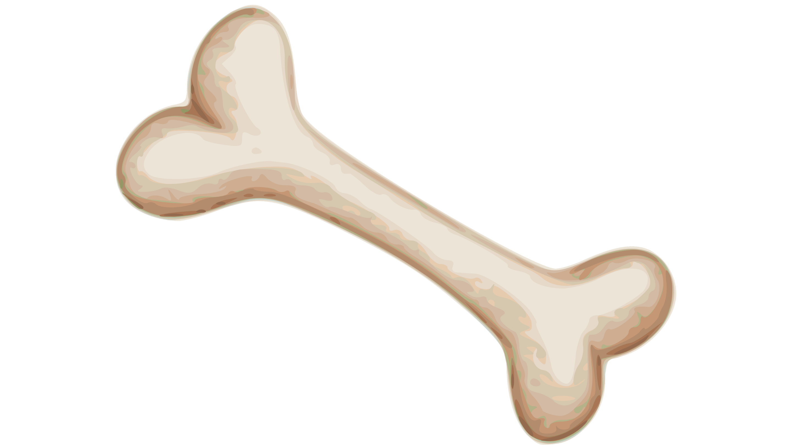
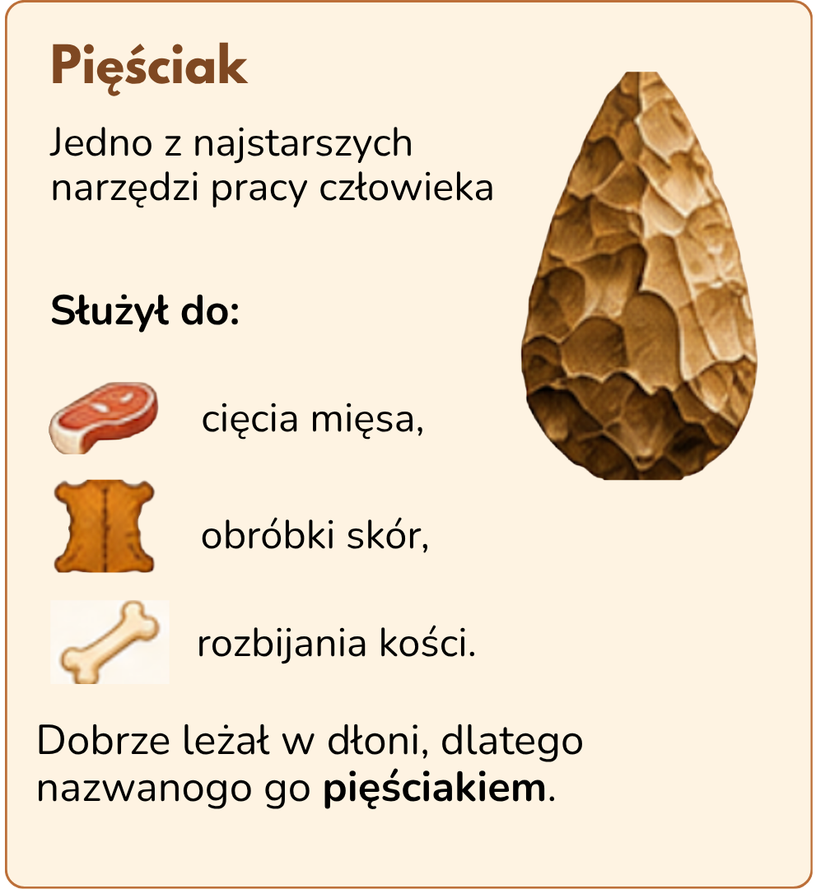
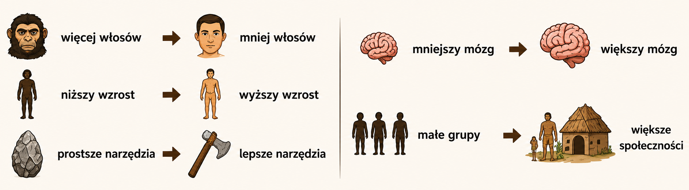

3. Jak zmieniał się człowiek?
⚜
🌎 Pierwsi przodkowie człowieka pojawili się w Afryce około 4 milionów lat temu.
⏳ Przez bardzo długi czas ich wygląd i umiejętności stopniowo się zmieniały.
🧠 Ludzie stawali się wyżsi, mniej owłosieni, a ich móżg rozwijał się coraz bardziej.
⚒️ Tworzyli też coraz lepsze narzędzia i uczyli się nowych umiejętności.
👥 Około 200 tysięcy lat temu pojawił się Homo sapiens - człowiek rozumny, do którego należymy również my.
Jak zmieniał się człowiek?
Homo habilis
≈ 2,5 mln lat temu
Homo habilis
≈ 2,5 mln lat temu
Homo erectus
≈ 1,9 mln lat temu
Homo sapiens
≈ 200 tys. lat temu

Jak zmieniał się człowiek z czasem?


Sowa Historyk
Ważną umiejętnością było wykształcenie się mowy.
Dzięki mowie ludzie mogli przekazywać wiedzę, planować polowania i współpracować.
📖 Słowniczek
Przodek – istota, od której pochodzimy.
Praludzie – najdawniejsi przodkowie człowieka.
Pięściak – kamienne narzędzie trzymane w dłoni.